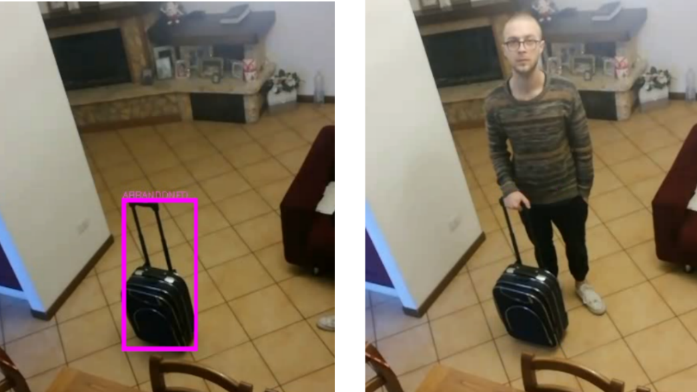

Mirco Mannino
PhD studentUniversity of Siena
Contacts
mannino@diism.unisi.itSocial
Projects
This page contains some personal and academic projects
RISC-V page table walk in gem5 SE mode
Integration of RISC-V page table walk, and TLB statistics, in
gem5 Syscall Emulation mode. The work was presented
at RAPIDO'24 workshop (HiPEAC).
RISCV Verilog description
A Verilog description of a RISCV datapath. The project was the
final assignment of Computer architecture
BSc course.

Abandoned Luggage Detection
OpenCV implementation of a system that can detect
abandoned luggage from a scene. The algorithm is implemented
in Python and it uses Detectron2 model for object detection.
